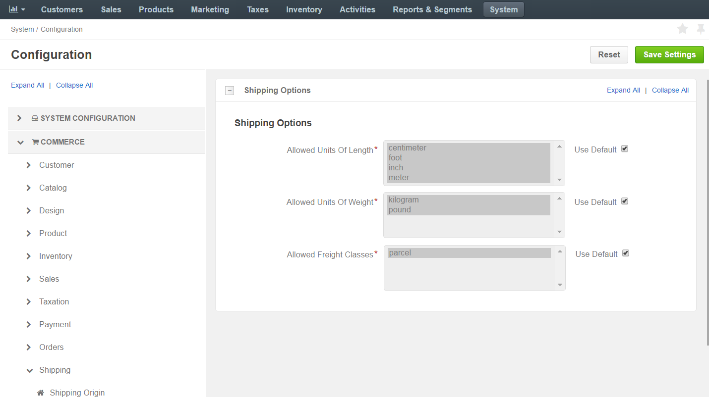

Shipping Options¶
You can enable and disable the shipping units of length and weight (and the freight class) that are available in OroCommerce out of the box. The enabled options are used in the customer orders and product shipping details.
To change these shipping options:
Navigate to the system configuration (click System > Configuration in the main menu).
Select Commerce > Shipping > Shipping Options in the menu to the left.
The following page opens.
The following options are available on the page:
- Allowed Units Of Length:
- inch
- foot
- centimeter
- meter
- Allowed Units Of Weight:
- pound
- kilogram
- Allowed Freight Classes:
- parcel
- Allowed Units Of Length:
To customize any of these options:
- Clear the Use Default box next to the option.
- Select/deselect the option by holding Ctrl and clicking on the value (e.g. pound).
Click Save.